1. 360浏览器 IE浏览器 Google浏览器 等等都可以登陆。
2. 通过浏览器登录ip地址119.23.237.174 如下图所示。
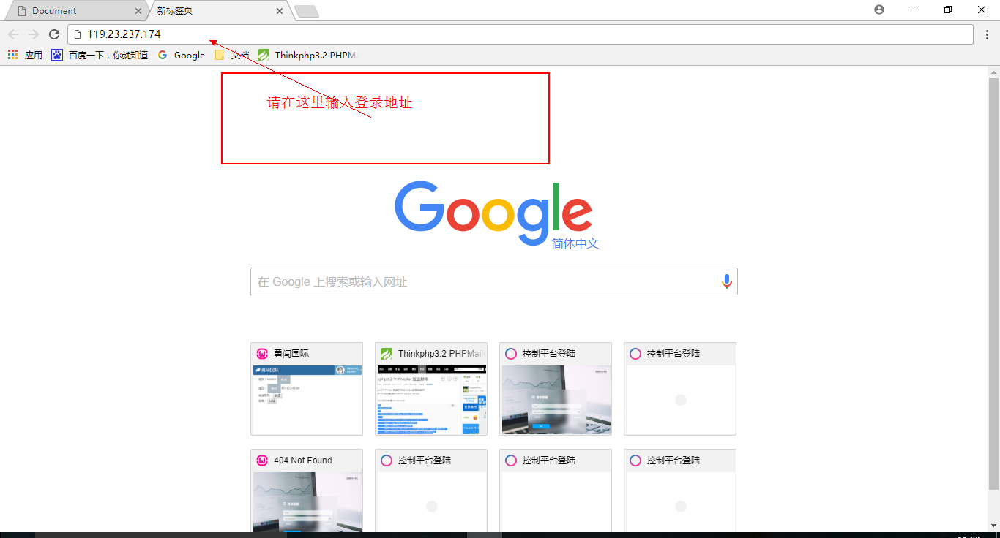1.1 系统默认显示控制平台登陆页面。
1.2 控制台右上角红色标注地方可选择商户中心和会员中心。
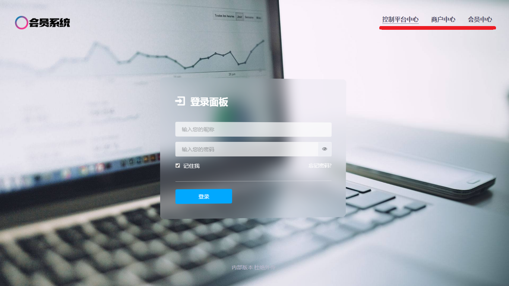2.1 选择商户中心后显示的商户登录页面。
2.2 输入用户名和密码登陆。
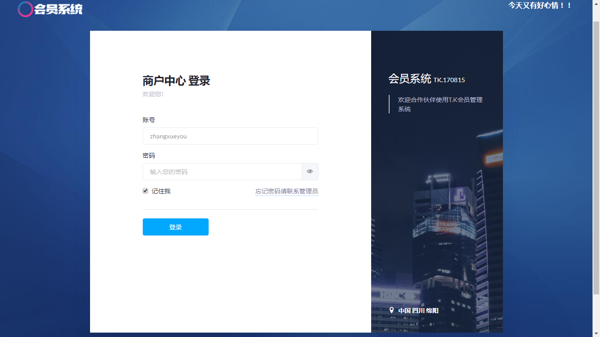1.可以左侧商户中心查看会员的充值日志、办卡日志、消费日志。
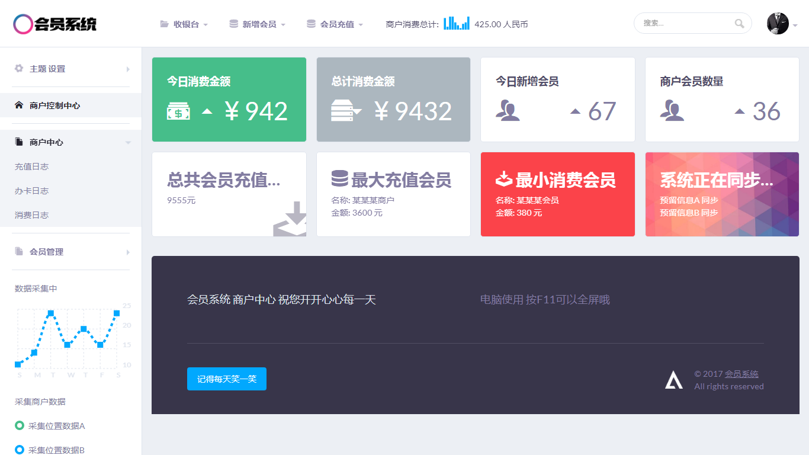2.充值日志页面展示，可查询在此店铺充值过的用户记录。
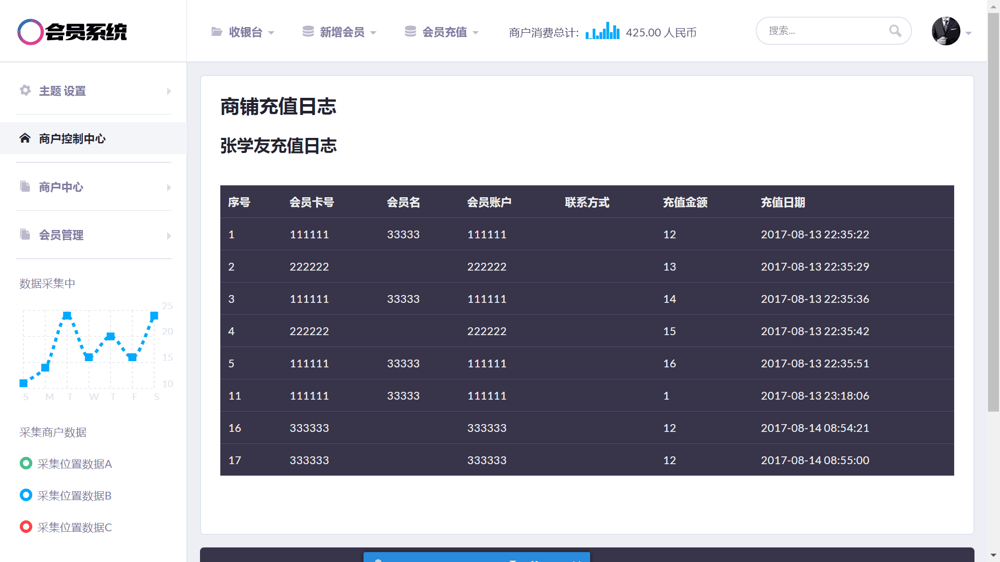3.办卡日志页面展示，可查询在此店铺办卡过的用户记录。
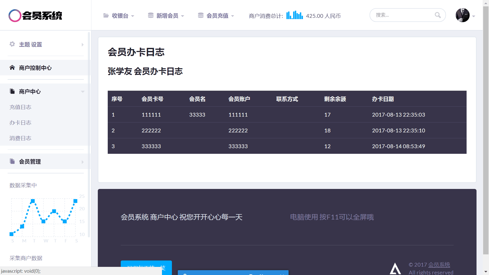4.消费日志页面展示，可查询在此店铺消费过的用户记录。
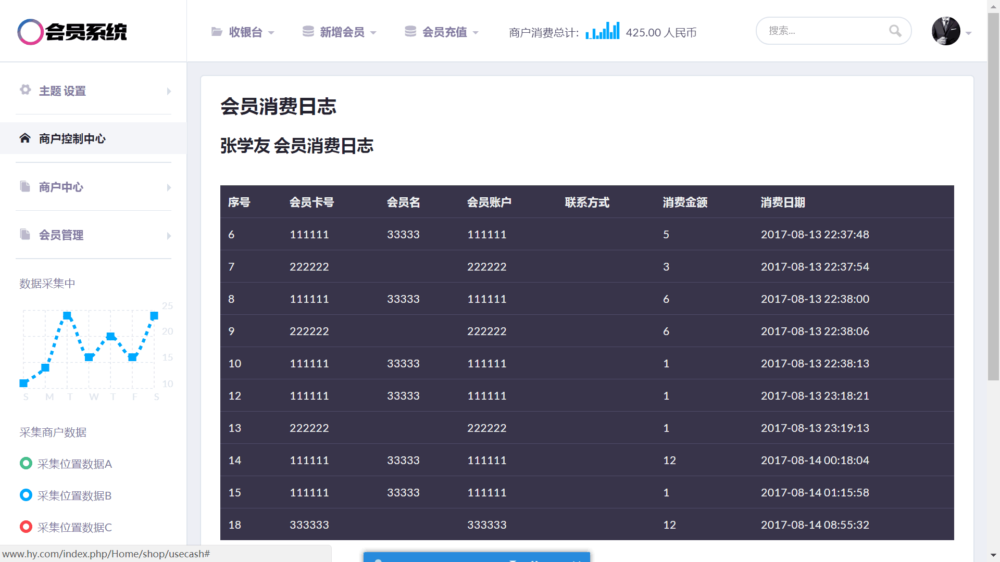1.怎么进入新增会员、会员充值、会员消费呢？ 如下图红色箭头指向所示。
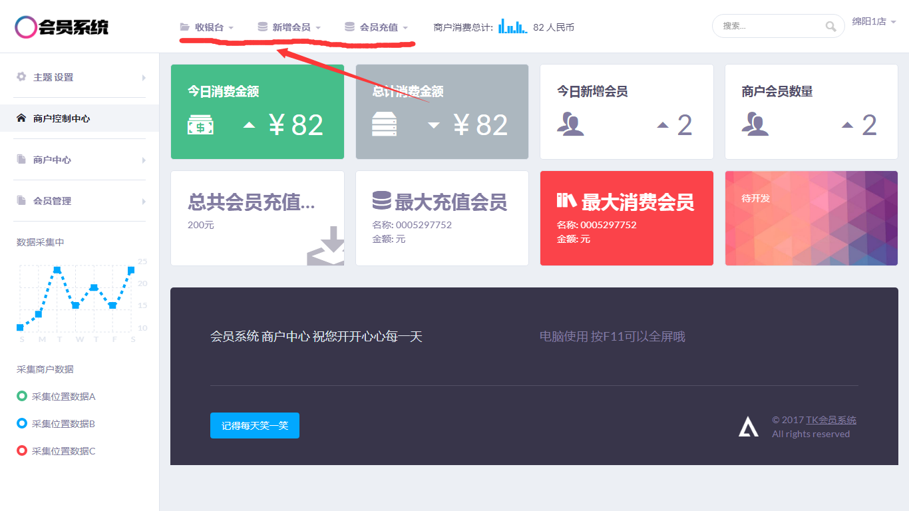2.会员新增。
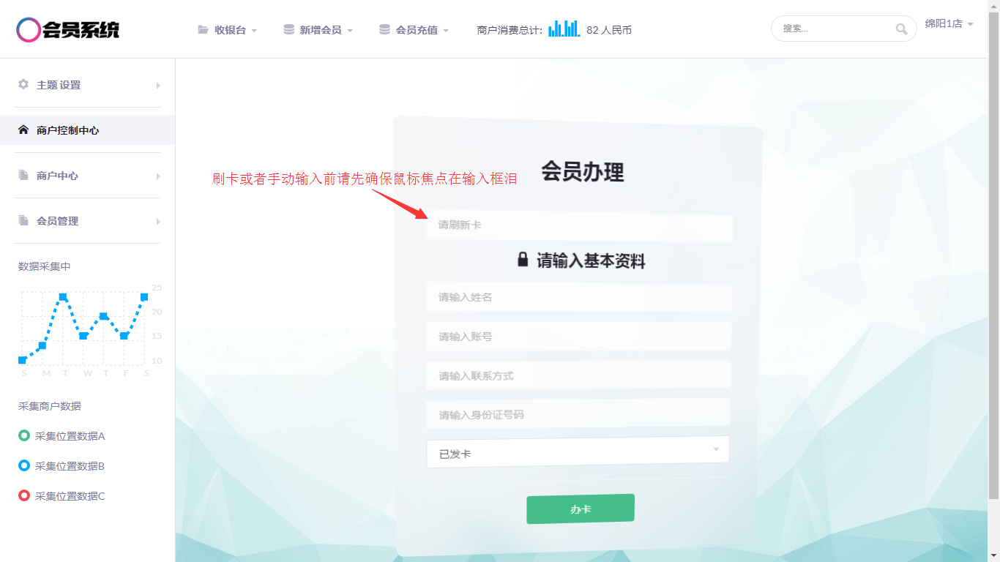3.1会员充值刷卡方式。
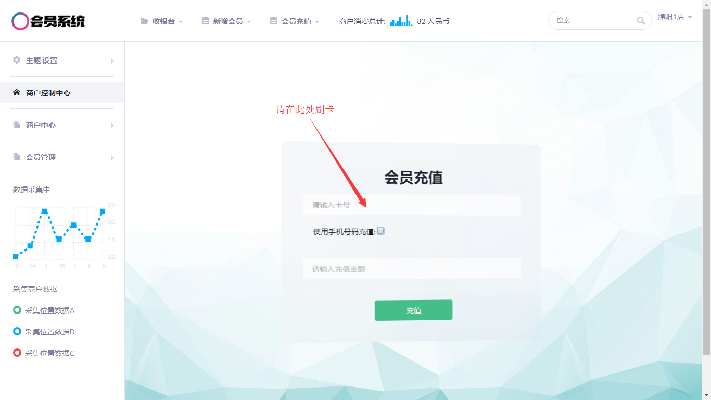3.2会员充值手机号码方式。
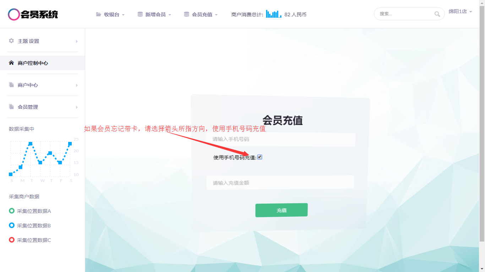4. 会员消费。
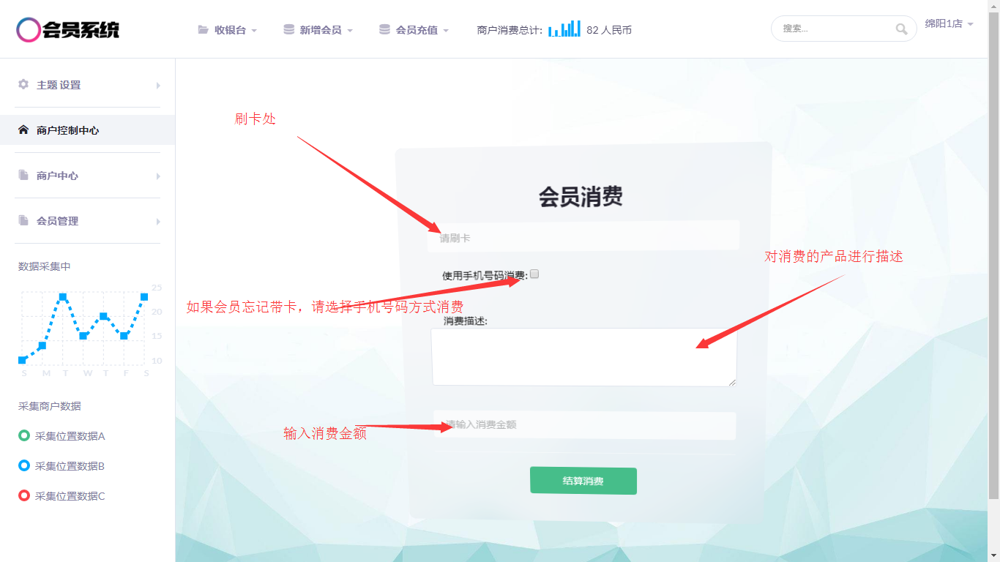内部版本 杜绝外传